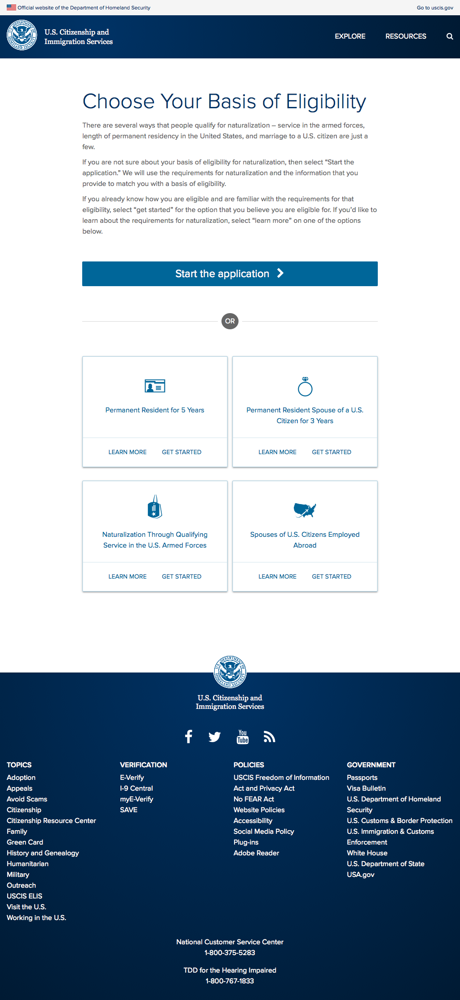
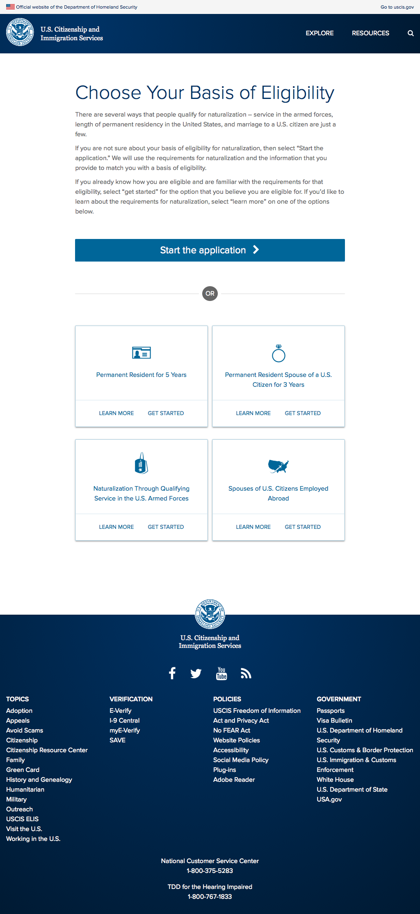
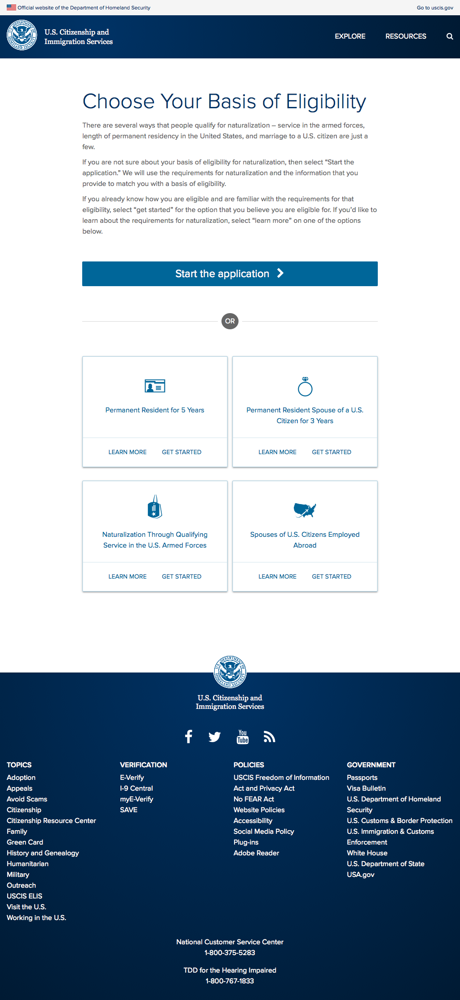

USCIS
Product design lead + UX research
 



I led the 18F team in partnership with the USCIS to apply user-centered design to improve citizenship services. I discovered anomalies in research that had been conducted before I joined the team, and subsequently led the team through build-measure-learn iteration cycles that helped us make course corrections on the product roadmap.
USCIS
Product design lead + UX research
